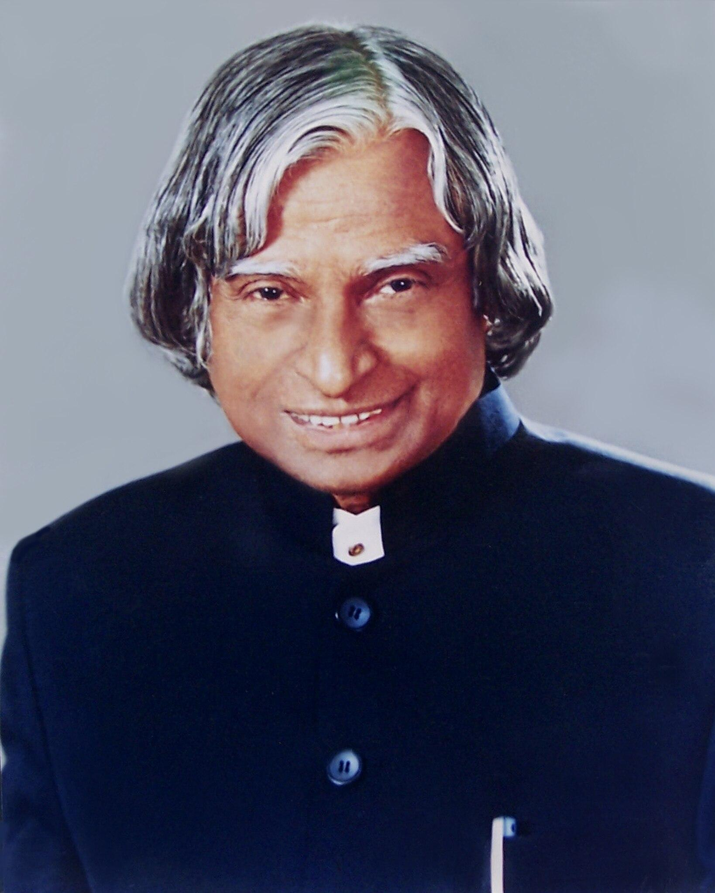
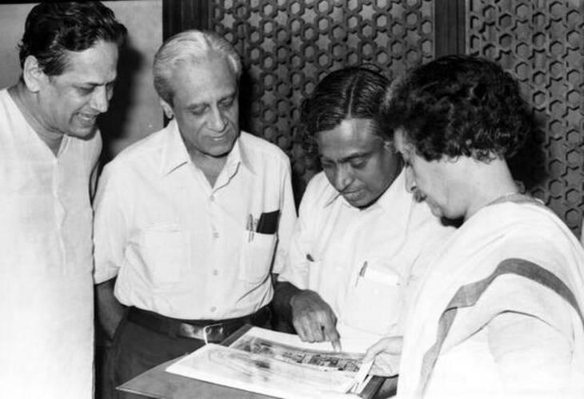
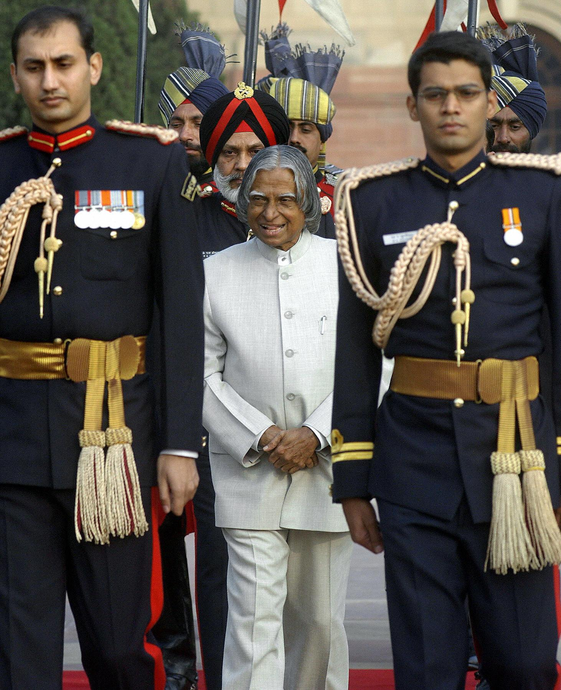
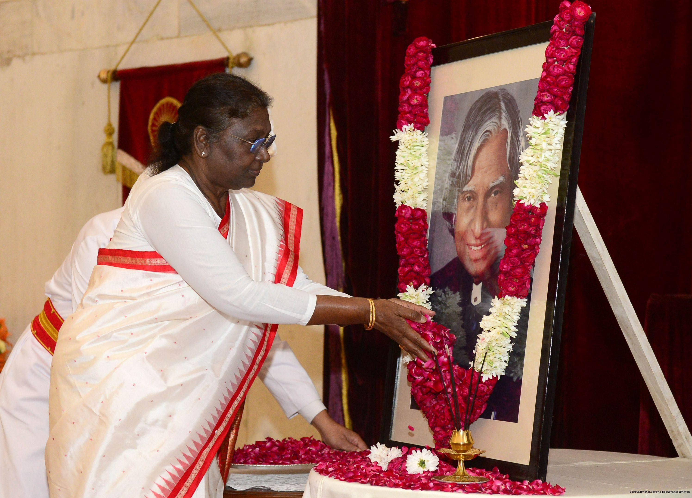

A TRIBUTE TO
The aerospace scientist, teacher and 11th President of India who inspired millions of young minds.
Explore His Journey
Dr. Avul Pakir Jainulabdeen Abdul Kalam was born on 15 October 1931 in Rameswaram, Tamil Nadu. He specialized in Aeronautical Engineering from the Madras Institute of Technology.
He spent several decades working in India's space and defence programmes and later served as the 11th President of India from 25 July 2002 to 25 July 2007.
Beyond his scientific and public service career, Dr. Kalam was deeply committed to education and inspiring young people to contribute to the development of India.
Dr. Kalam made a significant contribution to India's first indigenous Satellite Launch Vehicle, SLV-III. The vehicle successfully placed the Rohini satellite into near-earth orbit in July 1980.
During his career at ISRO, he contributed to the evolution of India's launch vehicle programme. He later worked with DRDO and led the Integrated Guided Missile Development Programme.


25 JULY 2002 — 25 JULY 2007
Dr. A.P.J. Abdul Kalam became the 11th President of India on 25 July 2002 and served until 25 July 2007.
During his presidency, he continued to emphasize education, technology and the development of India. His interactions with students and young people became an important part of his public life.
Padma Bhushan
Padma Vibhushan
Bharat Ratna
Honorary Doctorates
Dr. Kalam also shared his ideas, experiences and vision through books that continue to inspire readers.
An autobiography of Dr. A.P.J. Abdul Kalam, written with Arun Tiwari.
A vision for transforming India into a developed nation.
A work focused on India's potential and the power of its people.
A collection connected with Dr. Kalam's experiences and thoughts.

HIS LEGACY
Dr. Kalam's life connected science, education, public service and his vision for a developed India. His dedication to interacting with students and young people remains one of the defining parts of his legacy.
He continues to be remembered as a scientist, teacher, author and former President who encouraged young minds to dream, learn and contribute to India.
Dream, dream, dream. Dreams transform into thoughts and thoughts result in action.
— Dr. A.P.J. Abdul Kalam